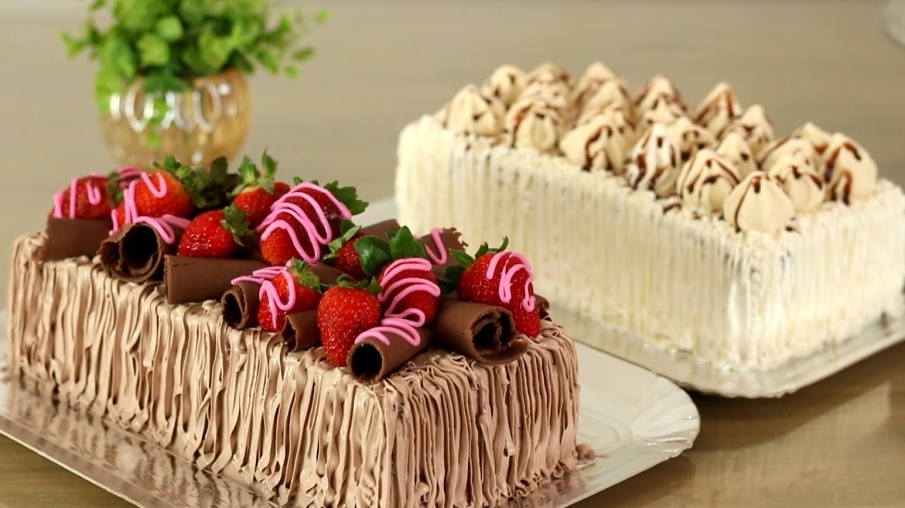

Temos um processo de fabricação 100% caseiro. Esse foi um dos maiores motivos que fizeram com que a Padaria Plus crescesse com as proporções que temos hoje. Temos um pão único de pura qualidade.

Uma viagem para a Itália nos fez conhecer alguns ingredientes que são essenciais para que a massa do bolo fique macia e gostosa. Hoje temos um produto incomparável.
Estamos localizados na Avenida Santos Agoz Nº 456
Nosso telefone:(11)96810-1119
Estamos funcionando nos seguintes horários:
Segunda à sexta: 7h às 22h
Sábados e domingos e feriados:7h às 16h